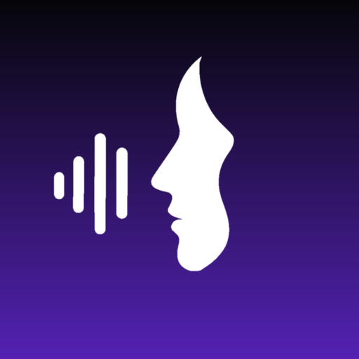
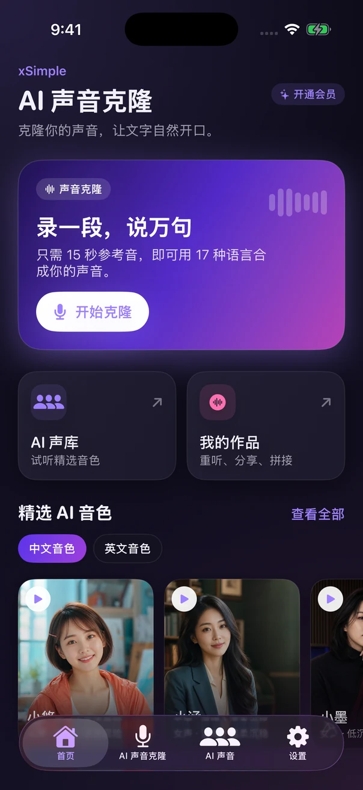
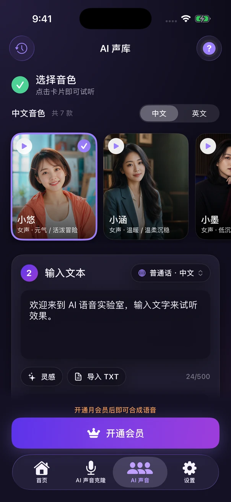
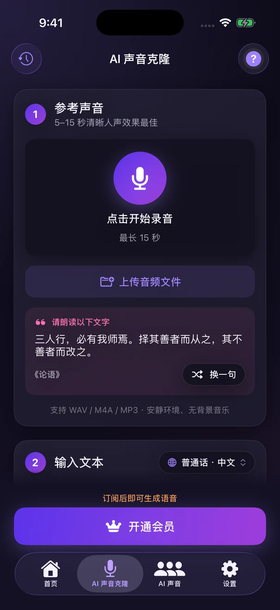

克隆自己的声音
直接录制参考声音，或导入自己拥有、已获授权的音频。建立声音档案，为自己的文案配音。

xSimple 声音克隆中国版 · iPhone App
一段自己的录音，一份想说的文案。用声音克隆与文字转语音，把短视频口播、故事朗读和课程讲解变成可听的作品。
内置音色免费试听 · 月会员 ¥12/月 解锁合成

从文字到声音
从选择音色到保存音频，在手机里完成配音创作。
直接录制参考声音，或导入自己拥有、已获授权的音频。建立声音档案，为自己的文案配音。
输入想说的话，选择声音进行 AI 合成。每次最多输入 500 个字符，适合分段准备口播与讲解。
试听生成结果，保存并导出 WAV 音频，再导入你习惯的剪辑工具，为视频或音频项目配音。
简单三步
免费试听内置音色，找到合适的表达；想用自己的声音，就录制或导入一段参考音频。
开通月会员后，使用选定的声音合成文字。生成过程需要联网，由 XM LLC 服务处理。
检查配音内容与效果，再把 WAV 文件保存或分享给其他应用，继续编辑。


给创作一点声音
把准备好的口播文案变成音频，再配上自己的视频画面。
将知识要点分段合成，制作教学演示或课程旁白。
让原创故事、生活记录与有权使用的文字，多一种分享方式。
一个月会员
内置音色可以免费试听。声音克隆与使用自定义文案合成语音，需要有效的月会员订阅。
¥12/ 月
中国大陆 App Store · 自动续期订阅
购买由 Apple 处理，实际价格与条款以 App 内购买页为准。订阅自动续期，可在 Apple 账户的订阅设置中管理或取消。单次合成最多 500 个字符。
常见问题
声音克隆使用你录制或导入的授权参考声音来合成文案；AI 配音也可以使用 App 内置的音色。两种方式都能把输入的文字转换成语音。
可以免费试听内置音色。用自己的文案进行声音克隆或语音合成，需要月会员订阅。中国大陆月会员为 ¥12/月，具体以 App 内购买页显示为准。
你可以在 App 内录音，或导入 WAV、M4A、MP3 参考音频。生成结果可导出为 WAV，方便在其他音频或视频编辑工具中使用。
每次最多输入 500 个字符。较长的内容可以按自然段拆分，分别生成，再按创作需要进行后续编辑。这是单次输入限制，不是字符充值计费。
需要。合成时，文案、参考音频及相关设置会发送至 XM LLC 的在线服务处理。请只使用自己或已获授权的声音，提交前阅读中国版隐私政策，了解数据处理方式。
使用购买时的 Apple 账户，在 App 内选择恢复购买。你也可以前往 iPhone“设置”中的 Apple 账户，打开“订阅”管理或取消续订。